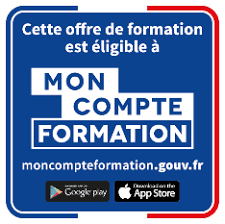

Bilan de compétences - Parcours Essentiel
- Analyser son parcours professionnel et personnel,
- Identifier ses compétences, aptitudes et motivations,
- Clarifier ses aspirations professionnelles,
- Construire un ou plusieurs projets professionnels réalistes et cohérents,
- Définir un plan d’actions opérationnel.
1 500 €

100% éligible au CPF
Public :
- Toute personne souhaitant faire le point sur leur situation professionnelle,
- Envisageant une évolution, une reconversion ou une sécurisation de parcours,
- Ayant besoin d’un cadre structuré pour prendre une décision éclairée.
Durée et organisation :
- Durée totale : 18 heures d'accompagnement en 3 à 4 mois
- Nombre de séances : 7 séances individuelles
- Rythme : à définir avec le bénéficiaire
- Modalités : présentiel et/ou distanciel